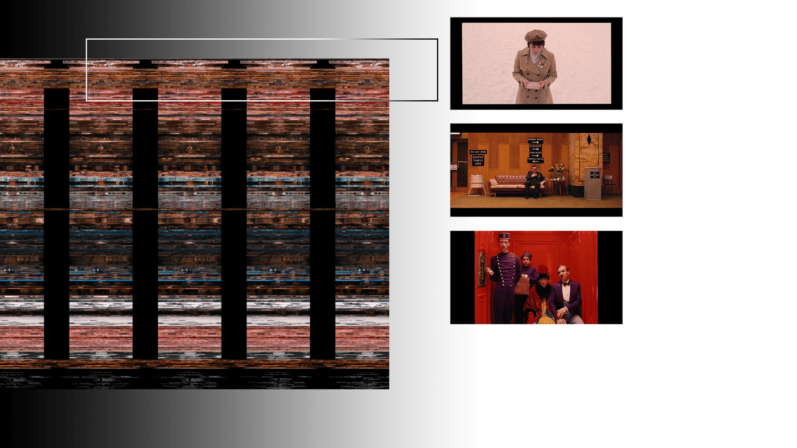
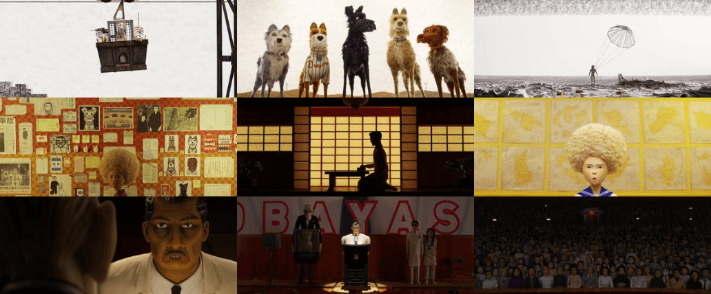

Watching Wes Anderson Without Watching Wes Anderson
The normal way of watching a movie involves experiencing it frame by frame, unfolding linearly over time as visual elements build upon one another. This project reimagines that approach, offering a single, comprehensive view to explore the visual essence of Wes Anderson's films.
To achieve this, each frame of the film was transformed from its original rectangular shape (720x1280) into a long, compressed strip (1x921,600 pixels). These strips were then stacked vertically to create the final artwork. As a result, the movie unfolds vertically from top to bottom, representing the progression from beginning to end. Horizontally, our eyes trace a zigzag pattern, moving through individual scenes from left to right and top to bottom.
Moonrise Kingdom (2012)

Moonrise Kingdom is divided into two distinctive palettes: before the storm and after the storm. The “before the storm” embraces the warm colors of yellow, green, and brown, with scenes mostly shot in bright sunlight while the “after the storm” rages in cooler shades of blue and teal, with lots of scenes without the sun or even in the dark.

The transition from the bright color to the darker one doesn’t follow the change of nature (the arrival of the storm) in the movie. It, however, follows the transition of the characters’ emotions. The change started right after Sam and Suzy got caught by the beach. The following scene of Suzy’s conversation with her mom immediately takes the sunlight out and drowns the movie in the cold tub. Perhaps, the movie’s real storm already raged after that conversation.

The Grand Budapest Hotel (2014)

The movie has many noticeable black columns that run vertically. Their widths vary in the beginning, then become consistent as the movie goes on. These black columns are created from the black margin of the frames. Different size of black margin signifies different screen ratios. In fact, Wes Anderson intentionally used different screen ratios to mimic different eras’ cinematic styles. The 80’s ⎯ 1.85 : 1, The 60’s ⎯ 2.40 : 1, The 30’s ⎯ 1.37:1.
{kind=link}
The movie is clearly divided into blocks of colors. Each group of scenes
is in
one
distinctive
palette of color. The transition of color is both more extreme and playful
than in
his early
works - Moonrise Kingdom and The Life Aquatic of Steve Zissou.

Isle of Dogs (2018)

Continued with the idea of using colors to define space for characters’ emotions, Isle of Dogs used extreme colors, black and white, to depict two different groups of scenes: the trash island and the city hall. Yellow strips that run horizontally between them are Tracy Walker. She brings light to the revolution of Atari and the dogs.
{kind=link}
Several groups of scenes in Isle of Dogs maintain a fixed layout, with both characters and the camera making minimal moves. For example, in the white strip area in the middle, we can see that the black area (the characters) stays in place for several continuous scenes. This can be the effect of stop motion, where continuous scenes have very subtle changes, so the audiences can really focus on such change and the “stop-motion delay” between the change. For example, the making sushi scene. However, when considering other movies by Wes Anderson, The Grand Budapest Hotel also has this same pattern. Many scenes in the movie, especially scenes where characters discuss, have very minimal camera movement. So rather than highlighting the effect of stop motion, in these scenes of Isle of Dog, Wes Anderson is leveraging stop motion to achieve his own distinctive technique. They play out so well and compliment each other.

Isle of Dogs

The Grand Budapest Hotel